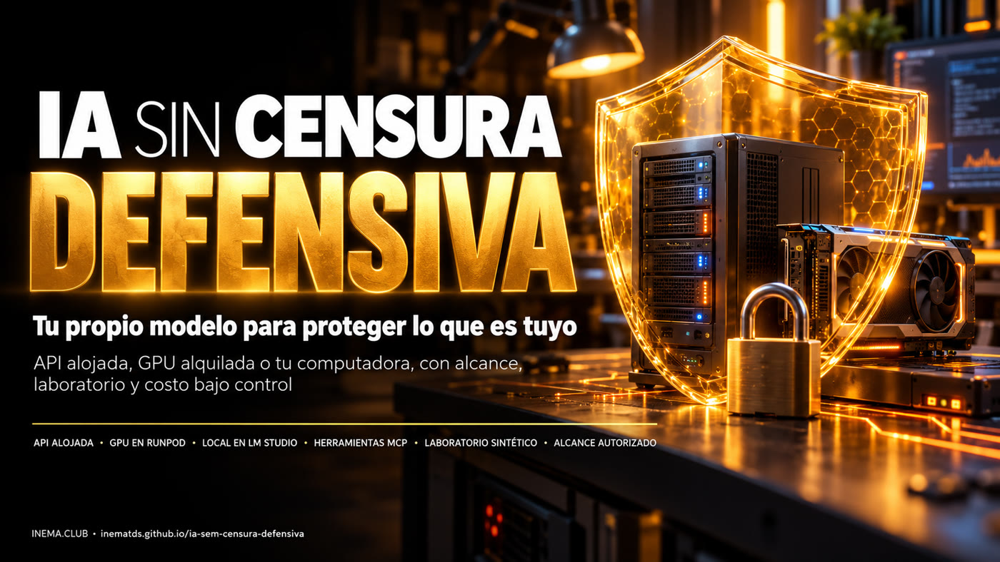

Tu propio modelo, sin sermones, para examinar lo que es tuyo — con alcance registrado, laboratorio simulado y la GPU apagada cuando no la estés usando.

Este es un kit gratuito de INEMA, en portugués, para quienes estudian seguridad y quieren un modelo de IA abierto que no rechace preguntas técnicas: los llamados modelos abliterated, a los que se les quitó la tendencia a rechazar solicitudes. Muestra cómo conectar este modelo a DeepSeek Harness (un agente de código abierto) mediante una API, una GPU alquilada en RunPod o LM Studio en tu computadora. Incluye prompts listos, scripts que comprueban si funcionan el texto, las herramientas y las imágenes, un laboratorio simulado para practicar y una protección que apaga la GPU cuando está inactiva. Necesitas un asistente que lea archivos, Python 3.10+ y, según la opción, una cuenta de API o de GPU, además de permiso para todo lo que pruebes.
Quitarle al modelo la tendencia a rechazar solicitudes no elimina tu responsabilidad: esta recae en el alcance, el laboratorio y los permisos que otorgas. El kit incluye las tres cosas listas.
API alojada, GPU en RunPod o LM Studio local. En todas, el verificador comprueba por separado el texto en dos turnos, una función inofensiva y la lectura de una imagen.
Una página simulada en 127.0.0.1 con dos problemas de configuración. La comprobación solo se ejecuta con un archivo de alcance válido, hace una solicitud y rechaza cualquier host remoto.
Una protección local mide el tiempo de inactividad y, si se lo indicas, detiene tu Pod comprobando el ID y el nombre; empieza en modo de simulación y confirma EXITED.
El orden es siempre el mismo: primero el alcance y el laboratorio, luego una capacidad a la vez y el costo bajo control.
Menos pasos, sin GPU. Pagas por el uso de la API (no está incluido en la suscripción de chat). Ejemplos de proveedores: Abliteration y OrcaRouter.
Tú eliges el modelo y el runtime. Pagas por las horas de GPU y el almacenamiento. Ejemplo: Huihui Qwen3.5 9B abliterated Q6_K con proyector de visión.
Sin cuenta de GPU, si tu computadora puede con ello. Ejemplo: Huihui Qwen3.6 35B-A3B abliterated Q4_K (~21,7 GB + ~0,9 GB de proyector).
Modelos y precios comprobados el 26/10/2026. Pueden cambiar: compruébalos antes de descargar o alquilar.
Modelo abierto al que alguien le quitó técnicamente la tendencia a rechazar solicitudes.
Agente de código abierto que conversa con el modelo y le da herramientas dentro de una carpeta de trabajo.
Estándar para conectar herramientas a un agente de IA. Aquí: navegador (Playwright) e investigación (Firecrawl).
GGUF es el formato del archivo del modelo; Q4_K y Q6_K son niveles de compresión (cuantización): cuanto menor el número, más pequeño el archivo y algo menor la calidad.
Archivo adicional (mmproj) que permite al modelo leer imágenes. Debe ser compatible con el modelo y el runtime.
El programa que ejecuta el modelo y ofrece la API (por ejemplo, el servidor de LM Studio).
Pod es la máquina con GPU alquilada en RunPod. EXITED es el estado detenido: solo ese estado confirma que la GPU dejó de cobrarse por hora.
Scanner de línea de comandos que ejecuta «templates». El kit incluye uno pasivo, solo para el laboratorio.
La dirección de la API del modelo, que termina en /v1.
Los scripts del kit usan solo la biblioteca estándar de Python. El resto depende de la opción que elijas.
Para descargar el kit y ejecutar los scripts y las pruebas.
git clone https://github.com/inematds/ia-sem-censura-defensiva cd ia-sem-censura-defensiva python3 kit/scripts/doutor.py
Claude Code, Codex o similar. Sigue los prompts y te muestra lo que hará antes de hacerlo. Node.js en la versión que pida Harness.
API: cuenta y crédito con el proveedor. RunPod: cuenta y crédito. Local: memoria y espacio en disco disponibles. Ninguna suscripción de chat incluye API ni GPU.
Los pasos 1 a 4 funcionan hoy, sin ninguna cuenta. A partir del 5, sigue los prompts de la opción que elegiste.
El diagnóstico solo lee versiones y puertos; no instala nada ni abre claves.
git clone https://github.com/inematds/ia-sem-censura-defensiva && cd ia-sem-censura-defensiva python3 kit/scripts/doutor.py
25 pruebas en 127.0.0.1, con servidores simulados: alcance denegado, objetivo remoto rechazado, alcance vencido, hallazgo y corrección, proxy sin token, reloj de inactividad y fallo al detener.
python3 -m unittest discover -s kit/testes -v # Se ejecutaron 25 pruebas ... OK
Usa dos terminales. La comprobación crea un alcance de 10 minutos solo para tu laboratorio, hace una solicitud y enumera los hallazgos.
# terminal 1 python3 kit/scripts/laboratorio.py # terminal 2 python3 kit/scripts/checagem_segura.py --lab-local-autorizado # "achados": X-Content-Type-Options e Referrer-Policy ausentes
Detén el laboratorio (Ctrl+C), inicia la versión corregida y repite la misma comprobación. Usa la plantilla del informe (en portugués) para separar las pruebas, las hipótesis y las correcciones.
python3 kit/scripts/laboratorio.py --corrigido python3 kit/scripts/checagem_segura.py --lab-local-autorizado # "achados": []
Abre CONFIGURA-COM-ASSISTENTE.md (en portugués), copia la solicitud y pégala en Claude Code (o similar), abierto en la carpeta del kit. Te preguntará qué opción elegiste, cuánta memoria tienes disponible y cuál es tu presupuesto.
Sigue los prompts numerados (en portugués): el asistente instala lo que falte (Harness, LM Studio, Nuclei) y te lo muestra antes. En la opción local, con LM Studio instalado (el comando lms viene incluido), el servidor queda limitado a 127.0.0.1:
lms load SEU-MODELO --context-length 4096 --identifier defensivo-local --ttl 600 lms server start --bind 127.0.0.1 --port 1234
Si hay una clave, debe venir de un archivo privado; nunca del chat. Cada capacidad se muestra como un resultado separado.
# opción local: sin clave python3 kit/scripts/checa_endpoint.py --base-url http://127.0.0.1:1234/v1 \ --modelo defensivo-local --funcao --imagem kit/exemplos/teste-visao.png
# API o nube: la clave va en un archivo privado, en una sola línea mkdir -p ~/.segredos && chmod 700 ~/.segredos nano ~/.segredos/chave-modelo && chmod 600 ~/.segredos/chave-modelo export INEMA_CHAVE_MODELO_ARQ=~/.segredos/chave-modelo python3 kit/scripts/checa_endpoint.py --base-url https://SEU-PROVEDOR/v1 --modelo SEU-ID --funcao
Navegador (Playwright MCP), investigación (Firecrawl MCP) y Nuclei: prueba cada uno con una llamada real. Ejecuta Nuclei (scanner de línea de comandos, instalado por el prompt 03) solo contra el laboratorio, con el template pasivo del kit.
nuclei -u http://127.0.0.1:8181/ -t kit/exemplos/nuclei-cabecalhos-lab.yaml -rl 1 -c 1
Todas las solicitudes pasan por la protección en 127.0.0.1:8282, con un token local. Solo después de ver simulacao_pararia activas la detención real, con el ID y el nombre exactos del Pod. Comprueba EXITED en el panel.
# crea un token local aleatorio (Harness usa este, no la clave de RunPod) mkdir -p ~/.segredos && chmod 700 ~/.segredos python3 -c "import secrets;print(secrets.token_urlsafe(32))" > ~/.segredos/token-guarda chmod 600 ~/.segredos/token-guarda export INEMA_TOKEN_LOCAL_ARQ=~/.segredos/token-guarda python3 kit/scripts/guarda_ociosa.py --upstream https://SEU-ENDPOINT/v1 --ocioso 900
Completa una copia de escopo-autorizado.exemplo.json (en portugués) fuera del repositorio y usa el prompt 09: plan no destructivo, pruebas mínimas, corrección y nueva prueba.
Están al final de todos los prompts y en USO-DEFENSIVO.md (en portugués). No son opcionales.
Sistemas tuyos o con permiso por escrito de su propietario. Que una URL sea pública, que un inicio de sesión funcione o que tengas una clave de API no significa que tengas permiso.
Objetivo exacto, permiso registrado, acciones, periodo y límites. Si falta algo, venció o no está claro: detente.
Datos inventados en 127.0.0.1. Antes que cualquier otra cosa, haz comprobaciones que no cambien nada.
La prueba mínima que confirma el hallazgo. No descargues bases de datos, muestres credenciales reales ni toques cuentas ajenas.
Guárdalas en un archivo privado con chmod 600, indicado por una variable de entorno. Usa claves de prueba y revócalas al terminar.
Ejecuta primero el modelo descargado sin herramientas. El aislamiento depende del sistema operativo y del contenedor, no del texto del prompt.
El endpoint de tu computadora no queda abierto en la red. El endpoint en la nube siempre debe tener autenticación: comprueba que rechaza las solicitudes sin clave.
Detener la app no detiene la GPU. El almacenamiento sigue generando cargos aunque el Pod esté detenido.
Un hallazgo de IA es una hipótesis hasta que se reproduce de forma segura. Un escaneo sin hallazgos no demuestra que algo sea seguro.
Análisis de seguridad sobre puertas traseras en modelos abliterated: ProjectDiscovery — How abliterated models can get you pwned (en inglés).
Las tres opciones, el laboratorio y el control de costos, en pocos minutos.
Pruebas con límites claros, no una certificación. Encontrarás los detalles en kit/verificacao/STATUS.md (en portugués).